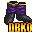

World of Dragon Ball Online
| ~~Boots~~ |
Item |
Nazwa |
Arm |
Atut |
| |
Boots |
1 |
--- |
|
Hercules Boots |
2 |
--- |
|
Human Boots |
3 |
--- |
|
Saiyan Boots |
5 |
Speed +20% |
|
Future Trunks Boots |
10 |
Critical Attack +5 |
|
Experial Boots Boots |
10 |
exp 10/s |
|
C17 Boots |
15 |
Ki and Health Regeneration + 50/s |
|
C16 Boots |
20 |
--- |
|
Android Boots |
20 |
ki Regeneration 80/s |
|
Bardock Boots |
25 |
Strenght,Critical Attack,Attack Speed,Ki Blast +5 |
|
Brolly Boots |
30 |
Defense +10. |
|
Tsuful Boots |
30 |
Strenght +20 |
|
Super c17 Boots |
35 |
Ki Regeneration +100 |
 |
Gotenks Boots |
35 |
Critical Attack +20 |
|
Majin Boots |
40 |
Speed +40 |
|
Future Corporation Boots |
40 |
Strenght +20 |
|
Corporation Boots |
40 |
Critical Attack +10 |
|
Shin Boots |
40 |
Ki and Health Regeneration +100/s |
|
Elite Saiyan Boots |
45 |
Power Regeneration 1/s |
|
Tsufurin Boots |
45 |
--- |
 |
Goku Boots |
50 |
Health and Ki+2000 |
|
Goku SSJ5 Boots |
50 |
Ki and Health Regeneration +130/s |
|
Paul Boots |
50 |
Speed +70 |
|
Strong Bardock Boots |
55 |
Defense and Energy +20, Health Regeneration 120/s |
|
Fusion Boots |
70 |
Ki and Health Regeneration +200/s |
|
Mistic Boots |
120 |
Ki and Health +5000, All skills +20, Ki and Health Regeneration +200/s |
|
Xicor Boots |
150 |
Ki Attack +10% |
|